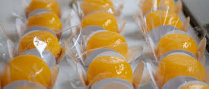

Bala caramelizada

Bala:
- 1 lata de leite condensado
- 100 g de coco ralado sem açúcar
- 1 colher (sobremesa) de margarina
Calda:
- 1 xícara (chá) de açúcar
- 3 colheres (sopa) cheias de vinagre branco (de álcool)
- Coloque o leite condensado, o coco e a margarina em uma panela.
- Misture bem e leve ao fogo, mexendo até desgrudar do fundo da panela.
- Deixe esfriar, enrole e reserve.
Modo de preparo:
- Em uma outra panela, coloque o açúcar e o vinagre e deixe ferver até o ponto de estalo.
- Em uma forma retangular de alumínio, com o auxilio de um garfo, passe as balinhas na calda e coloque para secar na forma.
- Depois de frio, embale em embalagens plásticas e secas.